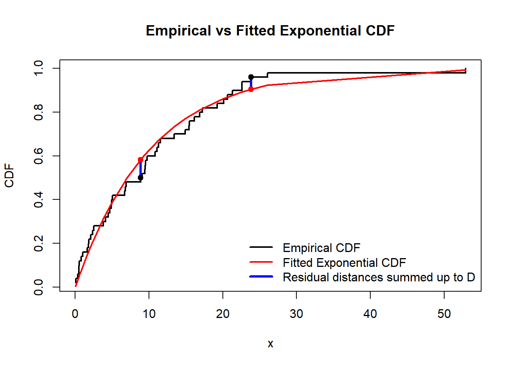

x <- rexp(n=50, rate=0.1)Lab 3: Parameter Estimation, Loops, Compound Distributions
\[ \renewcommand{\P}{\mathbb{P}} \newcommand{\E}{\mathbb{E}} \]
1 Fitting of data
We discussed on lectures the maximum likelihood estimate (MLE) for unknown parameters of the data. One of the ways to use it in R, is to load package
MASS(all capital letters). The command is thenfitdistr(DataVector, "name_of_distribution"), whereDataVectoris the vector of values we want to fit, and"name_of_distribution"is a string like"exponential","gamma","lognormal","normal","Poisson","weibull", and some others.To start, hence, you need to install package
MASSto R-Studio (see Lab 2 on how to install a package).Let’s first generate \(50\) values of a random variable \(X\sim Exp(\lambda)\) with \(\lambda=0.1\).
Now, suppose that we have only this data available and we want to estimate the value of \(\lambda\) given that we believe the data is exponentially distributed.
# First we load the previously installed package library(MASS) fitdistr(x, "exponential")rate 0.09849806 (0.01392973)Note that since
xwas random, your numbers may be (very) different.The first line of the output is the MLE \(\lambda_*\), which is apparently pretty close to \(0.1\). The second line of the output is the estimated standard errors (informally speaking, smaller—better!)
We can access the MLE value itself (e.g. to use it later) by assigning
fitdistroutput to a variable, call itf, and access the componentestimateof the objectf, using standard for Rclass$componentsyntax:f <- fitdistr(x, "exponential") f$estimaterate 0.09849806It’s still not a number itself but a pair of name of the parameter (“rate”) and its MLE. To get the value, we unname it:
lambda_mle <- unname(f$estimate) lambda_mle[1] 0.09849806Note that, in this example,
f$estimatehad only one component (for one parameterrate). We could also writeunname(f$estimate[1]). If there are several parameteres to estimate, we would usef$estimate[2],f$estimate[3]etc.
1.1
Set seed 123. Generate \(100\) random values of \(Y\sim N(5,9)\), and assign them to vector y. Assign the MLE for \(\mu=\mathbb{E}(Y)\) to variable mu and assign the MLE for \(\sigma=\sigma(Y)\) to variable sigma. Output the vector \((\mu,\sigma,\mu+\sigma)\). Check the answer.
Code
set.seed(123)
y <- rnorm(n = 100, mean = 5, sd = 3)
f <- fitdistr(y, "normal")
mu <- unname(f$estimate[1])
sigma <- unname(f$estimate[2])
c(mu, sigma, mu+sigma)[1] 5.271218 2.724721 7.9959391.2
Imagine that you don’t know that the first data x has exponential distribution and decided to try a normal distribution \(N(\mu,\sigma^2)\). It is still possible to calculate MLE for its parameters, though it’s likely that the estimated standard errors will be high. Given that the standard errors are in the sd component of fitdistr function, calculate the vector of standard errors for \(\mu\) and \(\sigma\).
Code
g <- fitdistr(x, "normal")
mu_stand_error <- unname(g$sd[1])
sd_stand_error <- unname(g$sd[2])
c(mu_stand_error, sd_stand_error)[1] 1.3598213 0.9615389Even when standard errors are relatively small, it is still reasonable to ask ourselves how can we be certain that the data follows the particular disribution. Various statistical tests may be applied. For ungrouped data, as we have e.g. in vector
x, the Kolmogorov–Smirnov test is widely used.ks.test(x, "pexp", rate = lambda_mle)Exact one-sample Kolmogorov-Smirnov test data: x D = 0.10167, p-value = 0.6423 alternative hypothesis: two-sidedIt tests whether we should reject the null-hypothesis \(H_0\) that the data follows the exponential distribution, against the alternative hypothesis \(H_1\) that it does not.
As you can see
ks.testfunction has several arguments:vector of the data (
x);name of the R function for the CDF we test against (
pexp);value(s) for the parameter(s) of that R function, using their name(s) (
ratehere; remember that you can always type in concole?functionnameto learn about the parameters offunctionname); the values were previously obtained from MLE.
The output (recall that you may get different numbers as your data
xwas likely different) shows the numberD(sum of absolute values of differences (residual distances) between the theoretical CDF and the CDF which can be calculated from the data, see the graph below), the smaller it is, the better prediction is. And also it shoes the \(p\)-value; in contrary, if \(p\)-value is small (close to \(0\)) it would mean that we have to reject \(H_0\) as then \(p\)-value would be the probability to observe the given data if \(H_0\) were true. Here \(p\)-value is pretty large, so there is no evidences to reject \(H_0\).

1.3
For the data y and MLE estimates mu and sigma from Task 1.1, apply the Kolmogorov–Smirnov test to test the null hypothesis that y follows the normal distribution with these two parameters. Check the output.
Code
ks.test(y, "pnorm", mean = mu, sd = sigma)
Asymptotic one-sample Kolmogorov-Smirnov test
data: y
D = 0.058719, p-value = 0.8808
alternative hypothesis: two-sided2 Loops
Often we need to repeat the same code several times and record the outputs. We can then loop over an index variable and record the outputs into a vector indexed by this variable.
“For”-loops in R use the syntax
for (i in range) {code}, whereiis the index variable which changes withinrange.Note that it is always better, firstly, preallocate the computer memory for the whole output vector, and then just change values of its coordinates inside the loop. This is much more effective than enlarging the vector with each step of the loop (especially for the vectors of large length).
For example, you can preallocate the memory by creating a zero-vector of the needed length
m, using R commandnumeric(m).The code below solves the followin problem. If we generate \(10^4\) random variables distributed normally with \(\mathcal{N}(0,1)\) and then calculate the sample mean, the result will differ from the expected value \(0\). However, if we repeat this procedure many times (e.g. \(10^3\) times) and record the obtained sample means, we will get values around \(0\).
In the code below,
iruns fromi=1toi=10^3,xis a temporary variable which will be rewritten on every iteration of the loopfor, andmean(x)will be assigned to thei-th component of vectormeans. Vectormeanswas created in advance by preallocating zeros to its components.n <- 10**4 # Number of random numbers in each sample m <- 10**3 # Number of samples means <- numeric(m) # Preallocated vector of means for (i in 1:m){ x <- rnorm(n, mean = 0, sd = 1) means[i] <- mean(x) } plot(1:m, means, xlab="Trials", ylab="Means")
The plot shows that the obtained means indeed fluctuates around the expected value \(0\).
2.1
Set seed \(23\). Generate \(10^5\) an exponential random variable with mean \(3\) (think about the value of the rate argument). Record the maximum of them (use R-function max). Repeat this procedure \(10^3\) times. Calculate the proportion of the found maximums which are larger then \(50\).
Check the answer:
Code
n <- 10**5
m <- 10**3
lambda <- 1/3
maxs <- rep(0, m)
set.seed(23)
for (i in 1:m){
x <- rexp(n, rate = lambda)
maxs[i] <- max(x)
}
sum(maxs > 50) / m[1] 0.0063 The compound Poisson distribution
Recall that the Poisson distribution is a discrete distribution: \(N\sim Po(\lambda)\) with a \(\lambda>0\) means that \[ \P(N=n)=\frac{\lambda^n}{n!}e^{-\lambda}, \qquad n\in\mathbb{Z}_+. \]
Recall, that for any discrete distribution, the density coincides with the probability at a point: \[ f_N(n)=\P(N=n), \qquad n\in\mathbb{Z}_+, \] and \(f_N(x)=0\) for \(x\notin\mathbb{Z}_+\); whereas, \[ F_N(x)=\sum_{n\leq x} \P(N=n)=\sum_{n=0}^{[x]}\frac{\lambda^n}{n!}e^{-\lambda}, \] where \([x]\) denotes the entire part of \(x\).
Similarly to the continuous distributions discussed in previous labs, R functions to deal with the Poisson distribution are
dpois,ppois,qpois,rpoisand the main their parameter is naturally calledlambda(type e.g.?dpoisin console to read about them).Recall that a random variable \(S\) has the compound Poisson distribution if \[ S= \sum_{k=1}^N X_k, \] where \(N\sim Po(\lambda)\) and \(\{X_k\}\) are i.d.d.r.v. Here \(X_k\) may be interpreted as individual claims and \(S\) is the aggregated claim (within certain time-interval).
3.1
Set seed \(123\). Generate \(10000\) values from a compound Poisson distribution with Poisson parameter \(\lambda=1000\) and individual claims which have gamma distribution \(\Gamma(750,0.25)\) (recall that here \(0.25\) is called rate in the corresponding R functions).
In other words, you will have some numbers \(N_1,\ldots, N_{10000}\) which came from the Poisson distribution, and for each \(N_k\), you have to generate \(N_k\) numbers from the gamma distribution: \(X_1^{(k)},\ldots,X_{N_k}^{(k)}\), and then you got the corresponding value of a compound Poisson random variables \[ S^{(k)} = X_1^{(k)}+\ldots+X_{N_k}^{(k)}. \]
Find the mean and the standard deviation (sd function) of the obtained sample of the compound Poisson random variables.
Hint: generate a vector N of \(n=10000\) Poisson r.v., and create a zero-vector S of length \(10000\) using numeric function. Then you will use a loop in \(k\) (\(1\leq k\leq 10000\)) inside which you generate the corresponding values of \(X_i^{(k)}\) and get their sums \(S^{(k)}\); and the latter would be assigned to S[k].
Check the answer:
Code
set.seed(123)
n <- 10^4
N <- rpois(n, lambda = 1000) # You may omit text "lambda = " here
S <- numeric(n)
for (k in 1:n)
{
x <- rgamma(N[k], shape = 750, rate = 0.25)
S[k] <- sum(x)
}
c( mean(S), sd(S) )[1] 2997650.56 93719.71Note that (see Lecture Notes) \[ \E(S)=\E(N)\E(X)=1000\cdot\frac{750}{0.25}=3000000, \] so the mean for the sample we obtained is close to the theoretical expectation.
3.2
In contrast to \(\E(S)\) and \(\mathrm{Var}(S)\), the probability distribution of \(S\) is hard for precise theoretical analysis. For example, there is not a “compact” formula for \[ \P(S>\E(S))=\P(S>3000000). \] Your task is to estimate this probability by looking at the ratio of \(S^{(k)}>3000000\) in the sample you previously obtained to all \(S^{(k)}\).
Check the answer.
Code
sum(S>3000000)/n[1] 0.4881Recall that a number \(q\) is called \(\alpha\)-percentile for a random variable \(X\), if \(\mathbb{P}(X\leq q)=\alpha\). As we discussed in Lab 1, in R, it’s called “quantiles”, and the corresponding functions starts with “q”:
qexp,qnormetc.We also discussed on a lecturethe notion of percentiles/quantiles for the data samples: we should order the sample, and find the number which divides it in the proportion \(\alpha/(1-\alpha)\). The corresponding R function is called
quantile:u <- rpois(n = 10, lambda = 100) sort(u) # This command is NOT needed for the quantile R function, it is just for better visualisation of the quantile function[1] 83 92 94 94 95 97 100 103 106 109quantile(u,0.3)30% 94
3.3
Find, based on the previously obtained sample of \(S^{(k)}\), the number \(q\) such that \[
\P(S\leq q) = 0.9
\] Assign the result to q.
Check the answer.
Code
q <- quantile(S,0.9)
q 90%
3115719 Now, modify the code from the previous Task to check that \(\P(S\leq 3115719) = 0.9\).
Code
sum(S<=q)/n[1] 0.9